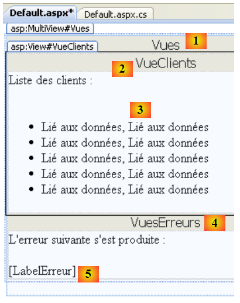

5. Clients .NET du service J2EE des rendez-vous
5.1. Un client C# 2008
Nous supposons désormais que le service web précédent est disponible et actif. Un service web est utilisable par des clients qui peuvent être écrits en différents langages. Nous nous proposons ici d'écrire un client console C# pour afficher la liste des médecins.
 |
Commençons par créer le projet C# :
 |
On crée une application console [1] appelée [ListeDesMedecins] [2]. En [3], on crée une référence sur un service web. Cet outil est similaire à celui utilisé dans Netbeans : il crée un proxy local du service web distant.
 |
- en [1], on indique l'uri du fichier WSDL du service web (cf paragraphe 4.10.2).
- en [2], on demande à l'assistant de découvrir les services web exposés à cette uri
- en [3], le service web trouvé et en [4] les méthodes qu'il expose.
- en [5], on précise dans quel espace de noms, les classes du proxy C doivent être générées
- en [6], on génère le proxy C.
 |
- en [1], la référence web que nous venons de créer. Double-cliquons dessus.
- en [2], l'explorateur d'objets ouvert par le double-clic.
- en [3], on sélectionne l'espace de noms [ListeDesMedecins.Ws.RdvMedecins] qui est l'espace de noms du proxy C généré. Le 1er terme [ListeDesMedecins] est l'espace de noms par défaut de l'application C# créée (nous avons appelée celle-ci ListeDesMedecins). Le second terme [Ws.Rdvmedecins] est l'espace de noms que nous avons donné au proxy C dans l'assistant. Au final, les objets du proxy C sont l'espace de noms [ListeDesMedecins.Ws.RdvMedecins].
- en [4], les objets du proxy C généré
 |
- en [5], [WsDaoJpaClient] est la classe implémentant localement les méthodes du service web distant.
- en [6], les méthodes de la classe [WsDaoJpaClient]. On y retrouve les méthodes du service web distant commepar exemple la méthode getAllClients en [7].
Examinons le code des entités générées :
 |
En [1] ci-dessus, on demande à voir le code de la classe [client] :
...
public partial class client : personne {
}
....
public partial class personne : object, System.ComponentModel.INotifyPropertyChanged {
...
public long id {
...
}
...
}
Ci-dessus, nous n'avons gardé que le code nécessaire à notre étude.
- ligne 2 : la classe [client] dérive de la classe [personne] comme dans le service web.
- ligne 8 : une propriété publique de la classe [personne]
Ce qu'on remarque, c'est que le code généré ne respecte pas les normes de codage habituelles de C#. Les noms des classes et des propriétés publiques devraient commencer par une majuscule.
Revenons à notre application C# :
 |
[Program.cs] [1] est la classe de test. Son code est le suivant :
using System;
using ListeDesMedecins.Ws.RdvMedecins;
using Client = ListeDesMedecins.Ws.RdvMedecins.client;
namespace ListeDesMedecins {
class Program {
static void Main(string[] args) {
try {
// instanciation couche [dao] du client
WsDaoJpaClient dao = new WsDaoJpaClient();
// liste des médecins
foreach (Client client in dao.getAllClients()) {
Console.WriteLine(String.Format("{0} {1} {2}", client.titre, client.prenom, client.nom));
}
} catch (Exception e) {
Console.WriteLine(e);
}
}
}
}
Ligne 12, la classe [Client] du proxy C est utilisée alors que nous venons de voir qu'elle s'appelait en réalité [client]. C'est la déclaration de la ligne 3 qui nous permet d'utiliser [Client] au lieu de [client]. Cela nous permet de respecter la norme de codage des noms de classe. Toujours ligne 12, la méthode [getAllClients] est utilisée parce c'est ainsi qu'elle s'appelle dans le proxy C. La norme de codage C# voudrait qu'elle s'appelle [GetAllClients].
L'exécution du programme [1] précédent donne les résultats montrés en [2].
5.2. Un premier client ASP.NET 2008
Nous écrivons maintenant un premier client ASP.NET / C# pour afficher la liste des clients.
 |
Dans cette architecture, il y a deux serveurs web :
- celui qui exécute le service web distant
- celui qui exécute le client ASP.NET du service web distant
Nous allons créer le projet web du client ASP.NET avec la version Visual Web Express 2008 SP1. Le paragraphe suivant montre comment créer le même projet si on n'a pas la version SP1 de Visual Web Express 2008.
 |
On crée une application web [1, 2, 3] appelée [ListeDesClients1] [4,5,6]. Le projet ainsi créé est visible en [7].
 |
- en [5], par un clic droit sur le nom du projet, on ajoute une référence de service web.
- en [6], on indique l'uri du fichier WSDL du service web (cf paragraphe 4.10.2).
- en [7], on demande à l'assistant de découvrir les services web exposés à cette uri
 |
- en [8], le service web trouvé et en [9] les méthodes qu'il expose sont affichées.
- en [10], on précise dans quel espace de noms, les classes du proxy C doivent être générées
- en [11], la référence du service web générée
Un double-clic sur la référence [Ws.Rdvmedecins] [12] affiche les classes et interfaces générées pour le proxy C :
 |
- en [1], l'explorateur d'objets ouvert par le double-clic.
- en [2], on sélectionne l'espace de noms [ListeDesClients1.Ws.RdvMedecins] qui est l'espace de noms du proxy C généré. Le 1er terme [ListeDesClients1] est l'espace de noms par défaut de l'application ASP.NET créée (nous avons appelée celle-ci ListeDesClients1). Le second terme [Ws.Rdvmedecins] est l'espace de noms que nous avons donné au proxy C dans l'assistant. Au final, les objets du proxy C sont l'espace de noms [ListeDesClients1.Ws.RdvMedecins].
- en [3], les objets du proxy C généré
 |
- en [4], [WsDaoJpaService] est la classe implémentant localement les méthodes du service web distant.
- en [5], les méthodes de la classe [WsDaoJpaService]. On y retrouve les méthodes du service web distant comme par exemple la méthode getAllClients en [6].
Examinons le code des entités générées :
 |
En [1] ci-dessus, on demande à voir le code de la classe [client] :
public partial class client : personne {
}
...
public partial class personne {
...
public long id {
...
}
Ci-dessus, nous n'avons gardé que le code nécessaire à notre étude.
- ligne 1 : la classe [client] dérive de la classe [personne] comme dans le service web.
- ligne 5 : la classe [personne]
- ligne 7 : une propriété publique de la classe [personne]
On retrouve un code analogue à celui déjà commenté pour le client C# au paragraphe 5.1.
- l'espace de noms du proxy C généré est celui défini dans son assistant de création préfixé par l'espace de noms du projet web lui-même : ListeDesClients1.Ws.RdvMedecins
- la classe proxy qui implémente localement les méthodes du service web distant s'appelle WsDaoJpaService.
- les noms des classes et des propriétés commencent par une minuscule
Nous pouvons écrire une page [Default.aspx] affichant la liste des clients. La page est la suivante :
 |
N° | Type | Nom | Rôle |
MultiView | Vues | Conteneur de vues | |
View | VueClients | la vue qui contient la liste des clients | |
Repeater | RepeaterClients | affiche la liste des clients sous la forme d'une liste à puces | |
View | VueErreurs | la vue qui affiche une éventuelle erreur | |
Label | LabelErreur | le texte de l'erreur |
Le code de présentation de cette page est comme suit :
<%@ Page Language="C#" AutoEventWireup="true" CodeBehind="Default.aspx.cs" Inherits="ListeDesClients1._Default" %>
<%@ Import Namespace="ListeDesClients1.Ws.RdvMedecins" %>
<!DOCTYPE html PUBLIC "-//W3C//DTD XHTML 1.1//EN" "http://www.w3.org/TR/xhtml11/DTD/xhtml11.dtd">
<html xmlns="http://www.w3.org/1999/xhtml">
<head id="Head1" runat="server">
<title>Liste des clients</title>
</head>
<body>
<form id="form1" runat="server">
<div>
<asp:MultiView ID="Vues" runat="server">
<asp:View ID="VueClients" runat="server">
Liste des clients :<br />
<br />
<ul>
<asp:Repeater ID="RepeaterClients" runat="server">
<ItemTemplate>
<li>
<%#(Container.DataItem as client).nom%>,
<%#(Container.DataItem as client).prenom%>
</li>
</ItemTemplate>
</asp:Repeater>
</ul>
</asp:View>
<asp:View ID="VuesErreurs" runat="server">
L'erreur suivante s'est produite :<br />
<br />
<asp:Label ID="LabelErreur" runat="server"></asp:Label></asp:View>
</asp:MultiView><br />
</div>
</form>
</body>
</html>
On notera, ligne 3, la nécessité d'importer l'espace de noms [ListeDesClients1.Ws.RdvMedecins] du proxy C du service web afin que la classe [client] des lignes 20 et 21 soit accessible.
Le code de contrôle [Default.aspx.cs] associé à la page de présentation [Default.aspx] est le suivant :
using System;
using ListeDesClients1.Ws.RdvMedecins;
namespace ListeDesClients1
{
public partial class _Default : System.Web.UI.Page
{
protected void Page_Load(object sender, EventArgs e)
{
try
{
// instanciation proxy local de la couche [dao] distante
WsDaoJpaService dao = new WsDaoJpaService();
// vue client
Vues.ActiveViewIndex = 0;
// initialisation vue client
RepeaterClients.DataSource = dao.getAllClients();
RepeaterClients.DataBind();
}
catch (Exception ex)
{
// vue erreurs
Vues.ActiveViewIndex = 1;
//initialisation vue erreurs
LabelErreur.Text = ex.ToString();
}
}
}
}
- ligne 8 : la méthode Page_Load est exécutée au chargement initial de la page. Ce chargement a lieu à chaque requête d'un client demandant la page.
- ligne 13 : on instancie le proxy local C. Ce proxy C implémente l'interface du service web distant. L'application va dialoguer avec ce proxy C.
- ligne 15 : si pas d'exception lors de l'instanciation du proxy local C, c'est la vue nommée "VueClients" qui doit être affichée, c.a.d. la vue n° 0 dans le MultiView "Vues" de la page.
- ligne 17 : la source de données du répéteur est la liste des clients fournie par la méthode getAllClients du proxy C.
- ligne 23 : en cas d'exception lors de l'instanciation du proxy local C, c'est la vue nommée "VueErreurs" qui doit être affichée, c.a.d. la vue n° 1 dans le MultiView "Vues" de la page.
- ligne 25 : l'exception est affichée dans le label "LabelErreur".
L'exécution du projet web donne le résultat suivant :
 |
5.3. Un second client ASP.NET 2008
Nous écrivons maintenant un second client ASP.NET / C# avec cette fois-ci la version Visual Web Developer Express 2008 qui a précédé la version SP1.
 |
Créons le projet web du client .NET :
 |
On crée un site web [1, 2] appelée [ListeDesClients] [3].
 |
- en [4], le projet web
- en [5], par un clic droit sur le nom du projet, on ajoute une référence de service comme il a été fait précédemment.
- en [6], le projet une fois la référence au service web distant ajoutée
Contrairement au projet web SP1 étudié précédemment, on n'a pas accès aux objets du client du service web via l'explorateur d'objets.
Ce qu'il faut savoir :
- l'espace de noms du proxy C généré est celui défini dans son assistant de création : Ws.RdvMedecins
- la classe proxy qui implémente localement les méthodes du service web distant s'appelle WsDaoJpaClient.
- les noms des classes et des propriétés commencent par une minuscule
Nous pouvons écrire une page [Default.aspx] affichant la liste des clients. La page est la suivante :
 |
N° | Type | Nom | Rôle |
MultiView | Vues | Conteneur de vues | |
View | VueClients | la vue qui contient la liste des clients | |
Repeater | RepeaterClients | affiche la liste des clients sous la forme d'une liste à puces | |
View | VueErreurs | la vue qui affiche une éventuelle erreur | |
Label | LabelErreur | le texte de l'erreur |
Le code de présentation de cette page est comme suit :
<%@ Page Language="C#" AutoEventWireup="true" CodeFile="Default.aspx.cs" Inherits="_Default" %>
<%@ Import Namespace="Ws.RdvMedecins" %>
<!DOCTYPE html PUBLIC "-//W3C//DTD XHTML 1.1//EN" "http://www.w3.org/TR/xhtml11/DTD/xhtml11.dtd">
<html xmlns="http://www.w3.org/1999/xhtml">
<head id="Head1" runat="server">
<title>Liste des clients</title>
</head>
<body>
<form id="form1" runat="server">
<div>
<asp:MultiView ID="Vues" runat="server">
<asp:View ID="VueClients" runat="server">
Liste des clients :<br />
<br />
<ul>
<asp:Repeater ID="RepeaterClients" runat="server">
<ItemTemplate>
<li>
<%#(Container.DataItem as client).nom%>, <%#(Container.DataItem as client).prenom%>
</li>
</ItemTemplate>
</asp:Repeater>
</ul>
</asp:View>
<asp:View ID="VuesErreurs" runat="server">
L'erreur suivante s'est produite :<br />
<br />
<asp:Label ID="LabelErreur" runat="server"></asp:Label></asp:View>
</asp:MultiView><br />
</div>
</form>
</body>
</html>
On notera, ligne 2, la nécessité d'importer l'espace de noms [Ws.RdvMedecins] du proxy C du service web afin que la classe [client] de la ligne 19 soit accessible.
Le code de contrôle [Default.aspx.cs] associé à la page de présentation [Default.aspx] est le suivant :
using System;
using Ws.RdvMedecins;
public partial class _Default : System.Web.UI.Page
{
protected void Page_Load(object sender, EventArgs e)
{
try
{
// instanciation proxy local de la couche [dao] distante
WsDaoJpaClient dao = new WsDaoJpaClient();
// vue client
Vues.ActiveViewIndex = 0;
// initialisation vue client
RepeaterClients.DataSource = dao.getAllClients();
RepeaterClients.DataBind();
}
catch (Exception ex)
{
// vue erreurs
Vues.ActiveViewIndex = 1;
//initialisation vue erreurs
LabelErreur.Text = ex.ToString();
}
}
}
Ce code est analogue à celui de la version précédente. L'exécution du projet web donne le résultat suivant :